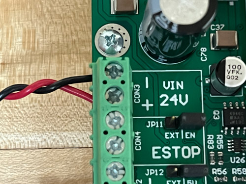
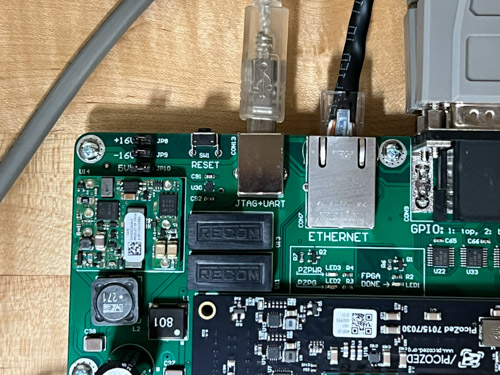
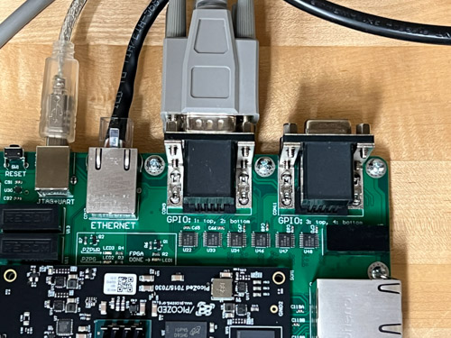
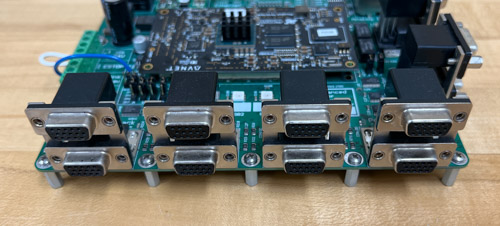
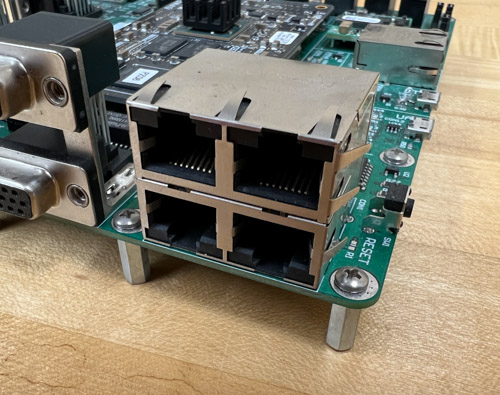
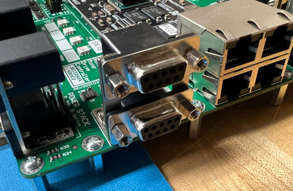

Tutorial: Meet the AMDC¶
Goal: Power on the AMDC and explore the I/O.
Complexity: 1 / 5
Estimated Time: 10 min
This tutorial goes over:
Applying power to the AMDC
Exploring the input and output available on the AMDC hardware
Tutorial Requirements¶
This is the first tutorial, so the only requirements are:
Working AMDC hardware
Step 1: Hook up power connections to the AMDC¶
For the AMDC to function, it needs external power.
This is supplied via a two-terminal screw post labeled with VIN (24V).
The user needs to connect an external DC supply to this input, being careful to follow the polarity marking on the PCB (i.e. connect the positive rail to the +, negative to -):
Connect a 24 V DC supply to the AMDC:
{kind=link}
After supplying the 24V input to the VIN terminals, the AMDC should come to life:
The LED labeled
PZPWR(LED3, meaning “PicoZed Power”) should turn on to indicate power is supplied to the PicoZed connectors.If the PicoZed is plugged in, the LED labeled
PZPG(LED2, meaning “PicoZed Power Good”) should turn on which indicates that the PicoZed acknowledges it has valid input power.
{kind=link}
Read more about the power circuitry architecture on the AMDC.
Step 2: [optional] Hook up additional screw post terminals¶
Next to the main power terminal from above are three more screw terminals:
E-STOPVDRIVEVINPS
{kind=link}
Connections to these terminals are optional – the AMDC processor will run code without any additional connections (just 24V power). However, these three connections are typically used for a complete drive assembly.
All three additional screw terminals relate to the power stack interface. They are described below and in the power stack documentation.
E-STOP terminals¶
The E-STOP input is used to enable/disable PWM output.
An open circuit between the two E-STOP terminals disables the PWM outputs.
REV D Hardware: the PWM outputs are disabled and will remain
LOWunless the two terminals of the E-STOP input are shorted together.REV E Hardware: same as REV D, except the external E-STOP input can be bypassed and the PWM enabled via jumper
JP11. Note thatJP11is required to select between external or bypassed E-STOP input–no jumper means no PWM output.
VDRIVE terminals¶
The VDRIVE terminal allows the user to supply a DC voltage input which is used as the logic HIGH voltage rail for the PWM output to the power stack interfaces.
In other words, when PWM is active, the physical voltage signal level will switch between the AMDC’s GND (i.e. 0V) and the user-supplied VDRIVE.
The valid input range for VDRIVE is 5V to 18V.
REV D Hardware: this input is required for PWM output to function.
REV E Hardware: Jumper
JP12is used to selectVDRIVEsource: external (EXT) input or internal 5V.
VINPS terminals¶
This input is completely isolated from the AMDC. It is only routed to the power stack interfaces, and is meant to simplify system wiring.
Users can supply any low-voltage supply (e.g. 24V) to the VINPS terminals and then use the supply in the attached power stacks.
Step 3: Host interface¶
The AMDC interfaces to the host computer via the so-called “host interface”. This includes a JTAG connection, USB-UART serial connection, and an optional Ethernet connection.
These connectors are located on the rear of the AMDC board:
{kind=link}
REV D Hardware: Two micro-USB connectors are used, one for JTAG, one for serial UART
REV E Hardware: One USB-B connector is used for both JTAG and serial UART
Step 4: Expansion ports¶
{kind=link}
The AMDC is designed to implement the core functionality needed for a motor drive. To augment the available features, expansion ports are included (sometimes called GPIO ports).
REV D Hardware: two total GPIO ports: one stacked set of two expansion ports
REV E Hardware: four total GPIO ports: two stacked sets of two expansion ports
Read more about the expansion ports in the hardware documentation.
Step 5: Motor drive interface¶
The rest of the ports on the AMDC are used to interface to motor drives. There are three types of ports:
Power stack (PWM)
Analog inputs
Encoder inputs
Power stack interface¶
{kind=link}
These are located at the front of the AMDC as four stacks of two, totaling eight total power stack interfaces.
Each power contains six PWM signals and four status lines, plus power rails.
The AMDC was designed such that each port can drive a single 3-phase 2-level voltage source inverter.
Read more about the power stack interface in the hardware documentation.
Analog inputs¶
{kind=link}
The AMDC inputs eight differential analog inputs.
Although the connector appears like Ethernet (i.e. RJ45 plugs), the signals on the wire are NOT Ethernet. The RJ45 connectors each have two diff pair analog inputs.
Read more about the analog inputs in the hardware documentation.
Encoder inputs¶
{kind=link}
The AMDC supports two encoder inputs. Standard RS-422 signaling is expected for quadrature position signals and once-per-rev index pulse.
Read more about the encoder inputs in the hardware documentation.
Conclusion¶
Congratulations! You now understand the AMDC external I/O, and you are ready to use the AMDC!